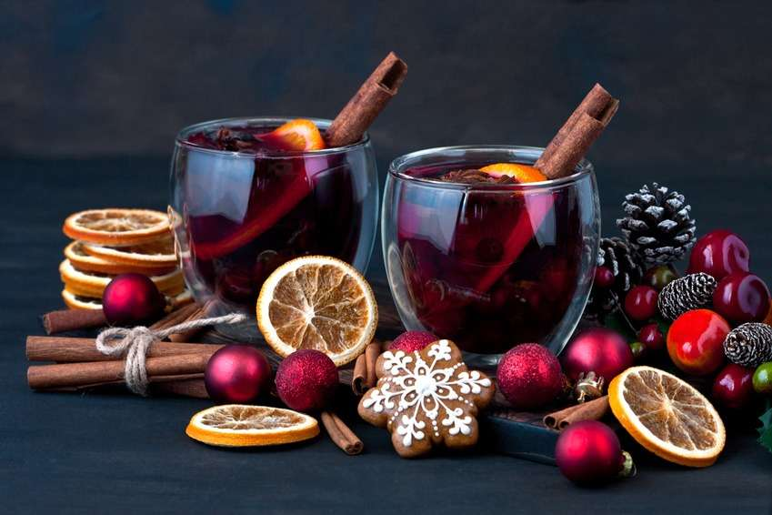

Gluhwein

Description
Fill your kitchen with the delicious scent of red wine, brandy, orange and spices in gluhwein.
It's the perfect grown-up drink to help you warm up on wintery days
Ingredients
- 1 orange, halved and sliced
- 1 bottle red wine
- 200g caster sugar
- 5 cloves
- 1 cinnamon stick
- 2 star anise
- 3 slices fresh ginger (peeled)
- 150ml brandy, rum, amaretto or schnapps
Steps
- Put the orange slices, wine, sugar, cloves, cinnamon, star anise and ginger in a large pan.
- Warm gently for 10-15 mins, being careful not to let the mixture boil.
- Add the alcohol, pour into glasses and serve warm.
Back to main page